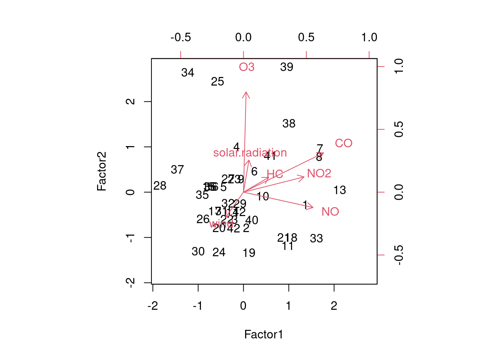
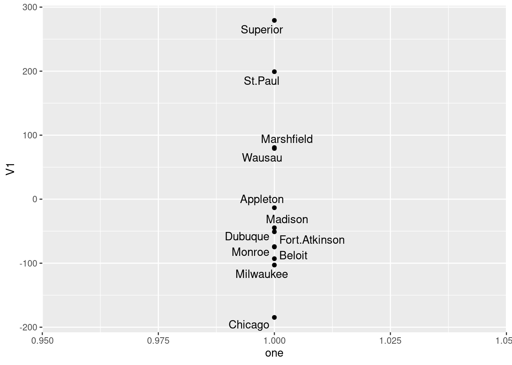

Chapter 29 Principal Components and Factor Analysis
Packages for this chapter:
29.1 The weather, somewhere
The data in link is of the weather in a certain location: daily weather records for 2014. The variables are:
day of the year (1 through 365)
day of the month
number of the month
season
low temperature (for the day)
high temperature
average temperature
time of the low temperature
time of the high temperature
rainfall (mm)
average wind speed
wind gust (highest wind speed)
time of the wind gust
wind direction
- Read in the data, and create a data frame containing only the temperature variables, the rainfall and the wind speed variables (the ones that are actual numbers, not times or text). Display the first few lines of your data frame.
Solution
Read into a temporary data frame, and then process:
my_url <- "http://www.utsc.utoronto.ca/~butler/d29/weather_2014.csv"
weather.0 <- read_csv(my_url)
weather.0There are lots of columns, of which we only want a few:
- Find five-number summaries for each column by running
quantileon all the columns of the data frame (at once, if you can).
Solution
I think this is the easiest way:
This loses the actual percents of the percentiles of the five-number summary (because they are “names” of the numerical result, and the tidyverse doesn’t like names.) I think you can see which percentile is which, though.
Another way to do it is to make a column of column names, using
pivot_longer, and then use nest and list-columns to find
the quantiles for each variable:
weather %>%
pivot_longer(everything(), names_to="xname", values_to="x") %>%
nest_by(xname) %>%
mutate(q = list(enframe(quantile(data$x)))) %>%
unnest(q) %>%
pivot_wider(names_from=name, values_from=value) %>%
select(-data)That was a lot of work, but it depends on how you see it when you’re coding it. You should investigate this one line at a time, but the steps are:
create a “long” data frame with one column of variable names and a second with the values for that variable
make mini-data-frames
datacontaining everything butxname: that is, one columnxwith the values for that variable.for each mini-data-frame, work out the quantiles of its
x. Theenframesaves the labels for what percentiles they are.Unnest this to make a long data frame with one row for each quantile for each variable.
put the variable names in rows and the percentiles in columns.
- Run a principal components analysis (on the correlation matrix).
Solution
- Obtain a
summaryof your principal components analysis. How many components do you think are worth investigating?
Solution
## Importance of components:
## Comp.1 Comp.2 Comp.3 Comp.4 Comp.5 Comp.6
## Standard deviation 1.7830875 1.4138296 0.74407069 0.38584917 0.33552998 0.081140732
## Proportion of Variance 0.5299001 0.3331524 0.09227353 0.02481326 0.01876339 0.001097303
## Cumulative Proportion 0.5299001 0.8630525 0.95532604 0.98013930 0.99890270 1.000000000The issue is to see where the standard deviations are getting small (after the second component, or perhaps the third one) and to see where the cumulative proportion of variance explained is acceptably high (again, after the second one, 86%, or the third, 95%).
- Make a scree plot. Does this support your conclusion from the previous part?
Solution
ggscreeplot from ggbiplot:

I see elbows at 3 and at 4. Remember you want to be on the mountain for these, not on the scree, so this suggests 2 or 3 components, which is exactly what we got from looking at the standard deviations and cumulative variance explained.
The eigenvalue-greater-than-1 thing
(that is, the “standard deviation” in the summary being greater than 1)
says 2 components, rather than 3.
- Obtain the component loadings. How do the first three components depend on the original variables? (That is, what kind of values for the original variables would make the component scores large or small?)
Solution
##
## Loadings:
## Comp.1 Comp.2 Comp.3 Comp.4 Comp.5 Comp.6
## l.temp 0.465 0.348 0.542 0.470 0.379
## h.temp 0.510 0.231 -0.576 -0.381 0.458
## ave.temp 0.502 0.311 -0.804
## rain -0.296 0.397 0.853 -0.163
## ave.wind -0.253 0.560 -0.463 0.357 -0.529
## gust.wind -0.347 0.507 -0.230 -0.492 0.572
##
## Comp.1 Comp.2 Comp.3 Comp.4 Comp.5 Comp.6
## SS loadings 1.000 1.000 1.000 1.000 1.000 1.000
## Proportion Var 0.167 0.167 0.167 0.167 0.167 0.167
## Cumulative Var 0.167 0.333 0.500 0.667 0.833 1.0001: This component loads mainly (and positively) on the temperature variables, so when temperature is high, component 1 is high. You could also say that it loads negatively on the other variables, in which case component 1 is high if the temperature variables are low and the rain and wind variables are high.
2: This one loads most heavily, positively, on wind: when wind is high, component 2 is high. Again, you can make the judgement call that the other variables also feature in component 2, so that when everything is large, component 2 is large and small with small.
3: This one is a bit clearer. The blank loadings are close to 0, and can be ignored. The main thing in component 3 is rain: when rainfall is large, component 3 is large. Or, if you like, it is large (positive) when rainfall is large and wind is small.
The interpretation here is kind of muffled, because each component has
bits of everything. One of the advantages of factor analysis that we
see in class later is that
you can do a “rotation” so that each variable (to a greater extent)
is either in a factor or out of it. Such a varimax rotation
is the default for factanal, which I presume I now have to
show you (so this is looking ahead):
##
## Loadings:
## Factor1 Factor2 Factor3
## l.temp 0.964 -0.230
## h.temp 0.939 -0.203 0.267
## ave.temp 0.992 -0.101
## rain -0.147 0.604
## ave.wind 0.864
## gust.wind -0.144 0.984
##
## Factor1 Factor2 Factor3
## SS loadings 2.839 2.131 0.140
## Proportion Var 0.473 0.355 0.023
## Cumulative Var 0.473 0.828 0.852These are a lot less ambiguous: factor 1 is temperature, factor 2 is rain and wind, and factor 3 is large (positive) if the high temperature is high or the low temperature is low: that is, if the high temperature was especially high relative to the low temperature (or, said differently, if the temperature range was high).
These factors are rather pleasantly interpretable.
ggbiplot mysteriously doesn’t handle factor analyses, so we
have to go back to the base-graphics version, which goes a bit like this:

Now you see that the factors are aligned with the axes, and it’s very clear what the factors “represent”. (You don’t see much else, in all honesty, but you see at least this much.)
- Obtain the principal component scores, for as many components as you think are reasonable, and display the first 20 of them for each component alongside the other variables in your data frame.
Solution
Something like this. I begin by turning the component scores (which are a matrix) into a data frame, and selecting the ones I want (the first three):
as_tibble(weather.1$scores) %>%
select(1:3) %>%
bind_cols(weather) %>%
mutate(day = row_number()) -> d
d %>% print(n = 20)I just did the first three scores. I made a column day so that I can see which day of the year I am looking at (later).
- Find a day that scores low on component 1, and explain briefly why it came out that way (by looking at the measured variables).
Solution
We can do this one and the ones following by running
arrange appropriately:
Day 40 has the lowest component 1 score. This is one of the cooler days. Also, there is a largish amount of rain and wind. So low temperature, high rain and wind. Some of the other days on my list were cooler than day 4, but they had less rain and less wind.
- Find a day that scores high on component 2, and explain briefly why it came out that way.
Solution
Day 37. These are days when the wind speed (average or gust) is on the high side.
- Find a day that scores high on component 3, and explain briefly why it came out high.
Solution
Day 307. Component 3 was mainly rain, so it is not surprising that the rainfall is the highest on this day.
- Make a biplot of these data, labelling the days by the day count (from 1 to 365). You may have to get the day count from the original data frame that you read in from the file. You can shrink the day numbers to make them overwrite each other (a bit) less.
Solution
ggbiplot. I did some digging in the help file to figure
out how to label the points by a variable and how to control the
size of the labels, and I also went digging in the data frame
that I read in from the file to get the count of the day in the
year, which was called day.count:

I think the label text is small enough, though you could make it smaller. I’ll be asking you to look at some extreme points in a moment, so those are the only ones you’ll need to be able to disentangle.
The variables divide into two groups: the temperature ones, that point to about 2 o’clock, and the wind and rain ones, that point to about 11 o’clock. These are not straight up or down or across, so they all feature in both components: component 1 is mostly temperature, but has a bit of wind/rain in it, while component 2 is mostly wind/rain with a bit of temperature in it. You might be wondering whether things couldn’t be rotated so that, say, the temperature variables go across and the rain/wind ones go down, which means you’d have a temperature component and a rain/wind component. This is what factor analysis does, and I think I did that earlier (and this is what we found).
- Looking at your biplot, what do you think was remarkable
about the weather on day 37? Day 211? Confirm your guesses by
looking at the appropriate rows of your data frame (and comparing
with your
summaryfrom earlier).
Solution
Day 37 is at the top left of the plot, at the pointy end of the arrows for rain, wind gust and average wind. This suggests a rainy, windy day:
Those are high numbers for both rain and wind (the highest for average wind and above the third quartile otherwise), but the temperatures are unremarkable.
Day 211 is towards the pointy end of the arrows for temperature, so this is a hot day:
This is actually the hottest day of the entire year: day 211 is highest on all three temperatures, while the wind speeds are right around average (and no rain is not completely surprising).
I can do a couple more. Points away from the pointy end of the arrows are low on the variables in question, for example day 265:
This is not really low rain, but it is definitely low wind. What about day 47?
This is predominantly low on temperature. In fact, it is kind of low on wind and rain too. If you ignore the wind gust, anyway. This makes sense, because not only is it at the “wrong” end of the temperature arrows, it is kind of at the wrong end of the wind/rain arrows as well.
Having done these by percentile ranks in one of the other questions, let’s see if we can do that here as well:
The idea here is that we want to replace all the data values by the percent-rank version of themselves, rather than summarizing them as we have done before. That’s what using an across inside a mutate will do.
There are also options to keep the original variables, and give the new ones new names.
These are:
Day 37: highly rainy and windy (and below average, but not remarkably so, on temperature).
Day 211: the highest or near-highest temperature, no rain but unremarkable for wind.
Day 265: Lowest for wind (and above Q3 for low temperature and rain).
Day 47: Lowest or near-lowest temperature.
The advantage to doing it this way is that you don’t need a separate five-number summary for each variable; the percentile ranks give you a comparison with quartiles (or any other percentile of interest to you). In case you are wondering where this is: I was doing a presentation using these data to some Environmental Science grad students, and I had them guess where it was. The temperatures for the whole year are warm-temperate, with a smallish range, and sometimes a lot of rain. This suggests a maritime climate. I gave the additional clues of “western Europe” and “this place’s soccer team plays in blue and white striped shirts”. The temperatures have about the right range low-to-high for Britain, but are too warm. Which suggests going south: perhaps Brittany in France, but actually the west coast of the Iberian peninsula: Porto, in northern Portugal, with the weather blowing in off the Atlantic.
29.2 Air pollution
The data in
link are
measurements of air-pollution variables recorded at 12 noon on 42
different days at a location in Los Angeles. The file is in
.csv format, since it came from a spreadsheet. Specifically,
the variables (in suitable units), in the same order as in the data
file, are:
wind speed
solar radiation
carbon monoxide
Nitric oxide (also known as nitrogen monoxide)
Nitrogen dioxide
Ozone
Hydrocarbons
The aim is to describe pollution using fewer than these seven variables.
- Read in the data and demonstrate that you have the right number of rows and columns in your data frame.
Solution
This is a .csv file, so:
##
## ── Column specification ──────────────────────────────────────────────────────────────────────────────────────
## cols(
## wind = col_double(),
## solar.radiation = col_double(),
## CO = col_double(),
## NO = col_double(),
## NO2 = col_double(),
## O3 = col_double(),
## HC = col_double()
## )There should be 42 rows (for the 42 days), and 7 columns (for the 7 variables), and there are.
- * Obtain a five-number summary for each variable. You can do this in one go for all seven variables.
Solution
Like this (the cleanest):
I have to figure out how to identify which number from the five number summary each of these is, but in this case you can easily figure it out since the min is the smallest and the max has to be the biggest in each column.
Or, with some more work, this:
air %>%
pivot_longer(everything(), names_to="xname", values_to="x") %>%
nest_by(xname) %>%
rowwise() %>%
mutate(q = list(enframe(quantile(data$x)))) %>%
unnest(q) %>%
pivot_wider(names_from=name, values_from=value) %>%
select(-data)There’s a lot here. Run it one line at a time to see what it does:
put the names of the variables in one column and the values in a second. This is the same trick as when we want to make plots of all the variables facetted.
the
nest_bysays: for each variable (whose names are now inxname), make a dataframe calleddataof the observations (inx) for that variablethe rest of the way, work one row at a time
work out the five-number summary for each variable, using the values
xin the data framedataof each row of the list-column, one at a time. This is the base Rquantile, working on a vector (the columnxof the data framedata), so it gives you back a named vector. If you are not familiar with that, try runningquantile(1:10)and see how the output has both the percentiles and, above them, the percents that they go with. The tidyverse doesn’t like names, so my favourite way of keeping them with a named vector is to run it throughenframe. This makes a two-column dataframe, with a column callednamethat is in this case the percents, and a column calledvaluethat is the percentiles. This is a dataframe rather than a single number, so it needs aliston the front as well (to make another list-column). There are rather a lot of brackets to close here; if you are not sure you have enough, type another close bracket, pause, and see what it matches (R Studio will show you). If it matches nothing, you have too many close brackets.show the values of the five-number summary for each variable (in long format, but with the percentages attached)
for human consumption, put the percentiles in columns, one row for each variable
finally, get rid of the dataframes of original values (that we don’t need any more now that we have summarized them).
Extra: say you wanted to make facetted histograms of each variable. You would begin the same way, with the pivot_longer, and at the end, facet_wrap with scales = "free" (since the variables are measured on different scales):
air %>%
pivot_longer(everything(), names_to="xname", values_to="x") %>%
ggplot(aes(x=x)) + geom_histogram(bins = 6) +
facet_wrap(~xname, scales = "free")
Extra extra: I originally put a pipe symbol on the end of the line with the geom_histogram on it, and got an impenetrable error. However, googling the error message (often a good plan) gave me a first hit that told me exactly what I had done.
- Obtain a principal components analysis. Do it on the correlation matrix, since the variables are measured on different scales. You don’t need to look at the results yet.
Solution
This too is all rather like the previous question:
- Obtain a scree plot. How many principal components might be worth looking at? Explain briefly. (There might be more than one possibility. If so, discuss them all.)
Solution
ggscreeplot the thing you just obtained, having loaded
package ggbiplot:

There is a technicality here, which is
that ggbiplot, the package, loads plyr, which
contains a lot of the same things as dplyr (the latter is a
cut-down version of the former). If you load dplyr and
then plyr (that is to say, if you load the
tidyverse first and then ggbiplot), you will end up
with trouble, and probably the wrong version of a lot of functions. To
avoid this, load ggbiplot first, and then you’ll be
OK.
Now, finally, we might diverge from the previous question. There are actually two elbows on this plot, at 2 and at 4, which means that we should entertain the idea of either 1 or 3 components. I would be inclined to say that the elbow at 2 is still “too high up” the mountain — there is still some more mountain below it.
The points at 3 and 6 components look like elbows too, but they are pointing the wrong way. What you are looking for when you search for elbows are points that are the end of the mountain and the start of the scree. The elbows at 2 (maybe) and 4 (definitely) are this kind of thing, but the elbows at 3 and at 6 are not.
- Look at the
summaryof the principal components object. What light does this shed on the choice of number of components? Explain briefly.
Solution
## Importance of components:
## Comp.1 Comp.2 Comp.3 Comp.4 Comp.5 Comp.6 Comp.7
## Standard deviation 1.5286539 1.1772853 1.0972994 0.8526937 0.80837896 0.73259047 0.39484041
## Proportion of Variance 0.3338261 0.1980001 0.1720094 0.1038695 0.09335379 0.07666983 0.02227128
## Cumulative Proportion 0.3338261 0.5318262 0.7038356 0.8077051 0.90105889 0.97772872 1.00000000The first component only explains 33% of the variability, not very much, but the first three components together explain 70%, which is much more satisfactory. So I would go with 3 components.
There are two things here: finding an elbow, and explaining a sensible fraction of the variability. You could explain more of the variability by taking more components, but if you are not careful you end up explaining seven variables with, um, seven variables.
If you go back and look at the scree plot, you’ll see that the first elbow is really rather high up the mountain, and it’s really the second elbow that is the start of the scree.
If this part doesn’t persuade you that three components is better than one, you need to pick a number of components to use for the rest of the question, and stick to it all the way through.
- * How do each of your preferred number of components depend on the variables that were measured? Explain briefly.
Solution
When this was a hand-in question, there were three marks for it, which was a bit of a giveaway! Off we go:
##
## Loadings:
## Comp.1 Comp.2 Comp.3 Comp.4 Comp.5 Comp.6 Comp.7
## wind 0.237 0.278 0.643 0.173 0.561 0.224 0.241
## solar.radiation -0.206 -0.527 0.224 0.778 -0.156
## CO -0.551 -0.114 0.573 0.110 -0.585
## NO -0.378 0.435 -0.407 0.291 0.450 0.461
## NO2 -0.498 0.200 0.197 -0.745 0.338
## O3 -0.325 -0.567 0.160 -0.508 0.331 0.417
## HC -0.319 0.308 0.541 -0.143 -0.566 0.266 -0.314
##
## Comp.1 Comp.2 Comp.3 Comp.4 Comp.5 Comp.6 Comp.7
## SS loadings 1.000 1.000 1.000 1.000 1.000 1.000 1.000
## Proportion Var 0.143 0.143 0.143 0.143 0.143 0.143 0.143
## Cumulative Var 0.143 0.286 0.429 0.571 0.714 0.857 1.000You’ll have to decide where to draw the line between “zero” and “nonzero”. It doesn’t matter so much where you put the line, so your answers can differ from mine and still be correct.
We need to pick the loadings that are “nonzero”, however we define that, for example:
component 1 depends (negatively) on carbon monoxide and nitrogen dioxide.
component 2 depends (negatively) on solar radiation and ozone and possibly positively on nitric oxide.
component 3 depends (positively) on wind and hydrocarbons.
It is a good idea to translate the variable names (which are abbreviated) back into the long forms.
- Make a data frame that contains (i) the original data, (ii) a column of row numbers, (iii) the principal component scores. Display some of it.
Solution
All the columns contain numbers, so cbind will do
it. (The component scores are seven columns, so
bind_cols won’t do it unless you are careful.):
This is probably the easiest way, but you see that there is a mixture
of base R and Tidyverse. The result is actually a base R data.frame, so displaying it will display all of it, hence my use of head.
If you want to do it the all-Tidyverse
way
There really ought to be a radio station CTDY: All Tidyverse, All The Time.
then you need to bear in mind that bind_cols only
accepts vectors or data frames, not matrices, so a bit of care is needed first:
I think the best way to think about this is to start with what is farthest from being a data frame or a vector (the matrix of principal component scores, here), bash that into shape first, and then glue the rest of the things to it.
Note that we used all Tidyverse stuff here, so the result is a
tibble, and displaying it for me displays the first ten rows as
you’d expect. (This may be different in an R Notebook, since I think
there you get the first ten rows anyway.)
- Display the row of your new data frame for the observation with the smallest (most negative) score on component 1. Which row is this? What makes this observation have the most negative score on component 1?
Solution
I think the best strategy is to sort by component 1 score (in the default ascending order), and then display the first row:
It’s row 8.
We said earlier that component 1 depends negatively on carbon monoxide and nitrogen dioxide, so that an observation that is low on component 1 should be high on these things. You might have said that component 1 depended on other things as well, in which case you ought to consider whether observation 8 is, as appropriate, high or low on these as well.
So are these values high or low? That was the reason for having you
make the five-number summary here. For
observation 8, CO is 6 and NO2 is 21; looking back
at the five-number summary, the value of CO is above Q3, and
the value of NO2 is the highest of all. So this is entirely
what we’d expect.
- Which observation has the lowest (most negative) value on component 2? Which variables ought to be high or low for this observation? Are they? Explain briefly.
Solution
This is a repeat of the ideas we just saw:
and for convenience, we’ll grab the quantiles again:
Day 34 (at the end of the line). We said that component 2 depends (negatively) on solar radiation and ozone and possibly positively on nitric oxide. This means that day 34 ought to be high on the first two and low on the last one (since it’s at the low end of component 2). Solar radiation is, surprisingly, close to the median (75), but ozone, 24, is very near the highest, and nitric oxide, 1, is one of a large number of values equal to the lowest. So day 34 is pointing the right way, even if its variable values are not quite what you’d expect. This business about figuring out whether values on variables are high or low is kind of fiddly, since you have to refer back to the five-number summary to see where the values for a particular observation come. Another way to approach this is to calculate percentile ranks for everything. Let’s go back to our original data frame and replace everything with its percent rank:
Observation 34 is row 34 of this:
Very high on ozone, (joint) lowest on nitric oxide, but middling on solar radiation. The one we looked at before, observation 8, is this:
High on carbon monoxide, the highest on nitrogen dioxide.
- Obtain a biplot, with the row numbers labelled, and explain briefly how your conclusions from the previous two parts are consistent with it.
Solution

Day 8 is way over on the left. The things that point in the direction
of observation 8 (NO2, CO and to a lesser extent NO
and HC) are the things that observation 8 is high on. On the
other hand, observation 8 is around the middle of the arrows for
wind, solar.radiation and O3, so that day
is not especially remarkable for those.
Observation 34 is nearest the bottom, so we’d expect it to be high on ozone (yes), high on solar radiation (no), low on nitric oxide (since that points the most upward, yes) and also maybe low on wind, since observation 34 is at the “back end” of that arrow. Wind is 6, which is at the first quartile, low indeed.
The other thing that you see from the biplot is that there are four variables pointing more or less up and to the left, and at right angles to them, three other variables pointing up-and-right or down-and-left. You could imagine rotating those arrows so that the group of 4 point upwards, and the other three point left and right. This is what factor analysis does, so you might imagine that this technique might give a clearer picture of which variables belong in which factor than principal components does. Hence what follows.
- Run a factor analysis on the same data, obtaining two factors. Look at the factor loadings. Is it clearer which variables belong to which factor, compared to the principal components analysis? Explain briefly.
Solution
##
## Loadings:
## Factor1 Factor2
## wind -0.176 -0.249
## solar.radiation 0.319
## CO 0.797 0.391
## NO 0.692 -0.152
## NO2 0.602 0.152
## O3 0.997
## HC 0.251 0.147
##
## Factor1 Factor2
## SS loadings 1.573 1.379
## Proportion Var 0.225 0.197
## Cumulative Var 0.225 0.422I got the factor scores since I’m going to look at a biplot shortly. If you aren’t, you don’t need them.
Factor 1 is rather more clearly carbon monoxide, nitric oxide and nitrogen dioxide. Factor 2 is mostly ozone, with a bit of solar radiation and carbon monoxide. I’d say this is clearer than before.
A biplot would tell us whether the variables are better aligned with the axes now:

At least somewhat. Ozone points straight up, since it is the dominant part of factor 2 and not part of factor 1 at all. Carbon monoxide and the two oxides of nitrogen point to the right.
Extra:
wind, solar.radiation and HC don’t appear
in either of our factors, which also shows up here:
## wind solar.radiation CO NO NO2 O3
## 0.9070224 0.8953343 0.2126417 0.4983564 0.6144170 0.0050000
## HC
## 0.9152467Those variables all have high uniquenesses.
What with the high uniquenesses, and the fact that two factors explain only 42% of the variability, we really ought to look at 3 factors, the same way that we said we should look at 3 components:
##
## Loadings:
## Factor1 Factor2 Factor3
## wind -0.210 -0.334
## solar.radiation 0.318
## CO 0.487 0.318 0.507
## NO 0.238 -0.269 0.931
## NO2 0.989
## O3 0.987 0.124
## HC 0.427 0.103 0.172
##
## Factor1 Factor2 Factor3
## SS loadings 1.472 1.312 1.288
## Proportion Var 0.210 0.187 0.184
## Cumulative Var 0.210 0.398 0.582In case you are wondering, factanal automatically uses the
correlation matrix, and so takes care of variables measured on
different scales without our having to worry about that.
The rotation has only helped somewhat here. Factor 1 is mainly
NO2 with some influence of CO and HC;
factor 2 is mainly ozone (with a bit of solar radiation and carbon monoxide),
and factor 3 is mainly NO with a bit of CO.
I think I mentioned most of the variables in there, so the uniquenesses should not be too bad:
## wind solar.radiation CO NO NO2 O3
## 0.8404417 0.8905074 0.4046425 0.0050000 0.0050000 0.0050000
## HC
## 0.7776557Well, not great: wind and solar.radiation still have
high uniquenesses because they are not strongly part of any
factors.
If you wanted to, you could obtain the factor scores for the 3-factor
solution, and plot them on a three-dimensional plot using
rgl, rotating them to see the structure. A three dimensional
“biplot”
A three-dimensional biplot ought to be called a triplot.
would also be a cool thing to look at.
29.3 A correlation matrix
Here is a correlation matrix between five variables. This correlation matrix was based on \(n=50\) observations. Save the data into a file.
1.00 0.90 -0.40 0.28 -0.05
0.90 1.00 -0.60 0.43 -0.20
-0.40 -0.60 1.00 -0.80 0.40
0.28 0.43 -0.80 1.00 -0.70
-0.05 -0.20 0.40 -0.70 1.00
- Read in the data, using
col_names=F(why?). Check that you have five variables with names invented by R.
Solution
I saved my data into cov5.txt,
Not to be confused with covfefe. delimited by single spaces, so:
##
## ── Column specification ──────────────────────────────────────────────────────────────────────────────────────
## cols(
## X1 = col_double(),
## X2 = col_double(),
## X3 = col_double(),
## X4 = col_double(),
## X5 = col_double()
## )I needed to say that I have no variable names and I want R
to provide some. As you see, it did: X1 through
X5. You can also supply your own names in this fashion:
my_names <- c("first", "second", "third", "fourth", "fifth")
corr2 <- read_delim("cov5.txt", " ", col_names = my_names)##
## ── Column specification ──────────────────────────────────────────────────────────────────────────────────────
## cols(
## first = col_double(),
## second = col_double(),
## third = col_double(),
## fourth = col_double(),
## fifth = col_double()
## )- Run a principal components analysis from this correlation matrix.
Solution
Two lines, these:
Or do it in one step as
if you like, but I think it’s less clear what’s going on.
- * Obtain a scree plot. Can you justify the use of two components (later, factors), bearing in mind that we have only five variables?
Solution

There is kind of an elbow at 3, which would suggest two components/factors. There is also kind of an elbow at 4, which would suggest three factors, but that’s really too many with only 5 variables. That wouldn’t be much of a reduction in the number of variables, which is what principal components is trying to achieve.
You can also use the eigenvalue-bigger-than-1 thing:
## Importance of components:
## Comp.1 Comp.2 Comp.3 Comp.4 Comp.5
## Standard deviation 1.7185460 1.1686447 0.70207741 0.36584870 0.2326177
## Proportion of Variance 0.5906801 0.2731461 0.09858254 0.02676905 0.0108222
## Cumulative Proportion 0.5906801 0.8638262 0.96240875 0.98917780 1.0000000Only the first two eigenvalues are bigger than 1, and the third is quite a bit smaller. So this would suggest two factors also. The third eigenvalue is in that kind of nebulous zone between between being big and being small, and the percent of variance explained is also ambiguous: is 86% good enough or should I go for 96%? These questions rarely have good answers. But an issue is that you want to summarize your variables with a (much) smaller number of factors; with 5 variables, having two factors rather than more than two seems to be a way of gaining some insight.
- Take a look at the first two component loadings. Which variables appear to feature in which component? Do they have a positive or negative effect?
Solution
##
## Loadings:
## Comp.1 Comp.2 Comp.3 Comp.4 Comp.5
## X1 0.404 0.571 0.287 0.363 0.545
## X2 0.482 0.439 0.144 -0.363 -0.650
## X3 -0.501 0.122 0.652 0.412 -0.375
## X4 0.490 -0.390 -0.171 0.689 -0.323
## X5 -0.338 0.561 -0.665 0.304 -0.189
##
## Comp.1 Comp.2 Comp.3 Comp.4 Comp.5
## SS loadings 1.0 1.0 1.0 1.0 1.0
## Proportion Var 0.2 0.2 0.2 0.2 0.2
## Cumulative Var 0.2 0.4 0.6 0.8 1.0This is messy.
In the first component, the loadings are all about the
same in size, but the ones for X3 and X5 are
negative and the rest are positive. Thus, component 1 is contrasting
X3 and X5 with the others.
In the second component, the emphasis is on X1, X2
and X5, all with negative loadings, and possibly X4,
with a positive loading.
Note that the first component is basically “size”, since the component loadings are all almost equal in absolute value. This often happens in principal components; for example, it also happened with the running records in class.
I hope the factor analysis, with its rotation, will straighten things out some.
- Create a “covariance list” (for the purposes of performing a factor analysis on the correlation matrix).
Solution
This is about the most direct way:
recalling that there were 50 observations. The idea is that we feed
this into factanal instead of the correlation matrix, so that
the factor analysis knows how many individuals there were (for testing
and such).
Note that you need the correlation matrix as a matrix,
not as a data frame. If you ran the princomp all in one step,
you’ll have to create the correlation matrix again, for example like this:
The actual list looks like this:
## $cov
## X1 X2 X3 X4 X5
## [1,] 1.00 0.90 -0.4 0.28 -0.05
## [2,] 0.90 1.00 -0.6 0.43 -0.20
## [3,] -0.40 -0.60 1.0 -0.80 0.40
## [4,] 0.28 0.43 -0.8 1.00 -0.70
## [5,] -0.05 -0.20 0.4 -0.70 1.00
##
## $n.obs
## [1] 50An R list is a collection of things not all of the same type, here a matrix and a number, and is a handy way of keeping a bunch of connected things together. You use the same dollar-sign notation as for a data frame to access the things in a list:
## [1] 50and logically this is because, to R, a data frame is a special kind of a list, so anything that works for a list also works for a data frame, plus some extra things besides. In computer science terms, a data frame is said to inherit from a list: it is a list plus extra stuff.
The same idea applies to extracting things from the output of a
regression (with lm) or something like a t.test: the
output from those is also a list. But for those, I like tidy
from broom better.
- Carry out a factor analysis with two factors. We’ll investigate the bits of it in a moment.
Solution
- * Look at the factor loadings. Describe how the factors are related to the original variables. Is the interpretation clearer than for the principal components analysis?
Solution
##
## Loadings:
## Factor1 Factor2
## [1,] 0.905
## [2,] -0.241 0.968
## [3,] 0.728 -0.437
## [4,] -0.977 0.201
## [5,] 0.709
##
## Factor1 Factor2
## SS loadings 2.056 1.987
## Proportion Var 0.411 0.397
## Cumulative Var 0.411 0.809Oh yes, this is a lot clearer. Factor 1 is variables 3 and 5 contrasted with variable 4; factor 2 is variables 1 and 2. No hand-waving required.
Perhaps now is a good time to look back at the correlation matrix and see why the factor analysis came out this way:
Variable X1 is highly correlated with X2 but not
really any of the others. Likewise variables X3, X4, X5 are
more or less highly correlated among themselves but not with the
others (X2 and X3 being an exception, but the big
picture is as I described). So variables that appear in the same
factor should be highly correlated with each other and not with
variables that are in different factors. But it took the factor
analysis to really show this up.
- Look at the uniquenesses. Are there any that are unusually high? Does that surprise you, given your answer to (here)? (You will probably have to make a judgement call here.)
Solution
## X1 X2 X3 X4 X5
## 0.1715682 0.0050000 0.2789445 0.0050000 0.4961028The ones for X3 and X5 are higher than the rest;
this is because their loadings on factor 1 are lower than the
rest. Since those loadings are still high, I wouldn’t be worried about
the uniquenesses.
The point here is that an (excessively) high uniqueness indicates a
variable that doesn’t appear in any factor. The easy link to
make is “all the variables appear in a factor, so there shouldn’t be any very high uniquenesses”. If, say, X3 doesn’t have a high
loading on any factor, X3 would have a high uniqueness (like
0.9, and none of these values approach that).
29.4 The Interpersonal Circumplex
The “IPIP Interpersonal Circumplex” (see link) is a personal behaviour survey, where respondents have to rate how accurately a number of statements about behaviour apply to them, on a scale from 1 (“very inaccurate”) to 5 (“very accurate”). A survey was done on 459 people, using a 44-item variant of the above questionnaire, where the statements were as follows. Put an “I” or an “I am” in front of each one:
talkative
find fault
do a thorough job
depressed
original
reserved
helpful
careless
relaxed
curious
full of energy
start quarrels
reliable
tense
ingenious
generate enthusiasm in others
forgiving
disorganized
worry
imaginative
quiet
trusting
lazy
emotionally stable
inventive
assertive
cold and aloof
persevere
moody
value artistic experiences
shy
considerate
efficient
calm in tense situations
prefer routine work
outgoing
sometimes rude
stick to plans
nervous
reflective
have few artistic interests
co-operative
distractible
sophisticated in art and music
I don’t know what a “circumplex” is, but I know it’s not one of those “hat” accents that they have in French.
The data are in
link. The
columns PERS01 through PERS44 represent the above traits.
- Read in the data and check that you have the right number of rows and columns.
Solution
Separated by single spaces.
##
## ── Column specification ──────────────────────────────────────────────────────────────────────────────────────
## cols(
## .default = col_double()
## )
## ℹ Use `spec()` for the full column specifications.Yep, 459 people (in rows), and 44 items (in columns), plus one column
of ids for the people who took the survey.
In case you were wondering about the “I” vs. “I am” thing, the story seems to be that each behaviour needs to have a verb. If the behaviour has a verb, “I” is all you need, but if it doesn’t, you have to add one, ie. “I am”.
Another thing you might be concerned about is whether these data are
“tidy” or not. To some extent, it depends on what you are going to
do with it. You could say that the PERS columns are all
survey-responses, just to different questions, and you might think of
doing something like this:
to get a really long and skinny data frame. It all depends on what you are doing with it. Long-and-skinny is ideal if you are going to summarize the responses by survey item, or draw something like bar charts of responses facetted by item:
pers %>%
pivot_longer(-id, names_to="item", values_to="response") %>%
ggplot(aes(x = response)) + geom_bar() + facet_wrap(~item)## Warning: Removed 371 rows containing non-finite values (stat_count).
The first time I did this, item PERS36 appeared out of order
at the end, and I was wondering what happened, until I realized it was
actually misspelled as PES36! I corrected it in the data
file, and it should be good now (though I wonder how many years that
error persisted for).
For us, in this problem, though, we need the wide format.
- There are some missing values among these
responses. Eliminate all the individuals with any missing values
(since
princompcan’t handle them).
Solution
This is actually much easier than it was in the past. A way of asking “are there any missing values anywhere?” is:
## [1] TRUEThere are. To remove them, just this:
Are there any missings left?
## [1] FALSENope. Extra: you might also have thought of the “tidy, remove, untidy” strategy here. The trouble with that here is that you want to remove all the observations for a subject who has any missing ones. This is unlike the multidimensional scaling one where we wanted to remove all the distances for two cities .
That gives me an idea, though.
To find out which subjects have any missing values, we can do a
group_by and summarize on subjects (that
means, the id column; the PERS in the column I
called item means “personality”, not “person”!). What do
we summarize? Any one of the standard things like mean will
return NA if the thing whose mean you are finding has any NA
values in it anywhere, and a number if it’s “complete”, so this kind
of thing, adding to my pipeline:
pers %>%
pivot_longer(-id, names_to="item", values_to="rating") %>%
group_by(id) %>%
summarize(m = mean(rating)) %>%
filter(is.na(m))This is different from drop_na, which would remove any rows (of the long data frame) that have a missing response. This, though, is exactly what we don’t want, since we are trying to keep track of the subjects that have missing values.
Most of the subjects had an actual numerical mean here, whose value we don’t care about; all we care about here is whether the mean is missing, which implies that one (or more) of the responses was missing.
So now we define a column has_missing that is true if the
subject has any missing values and false otherwise:
pers %>%
pivot_longer(-id, names_to="item", values_to="rating") %>%
group_by(id) %>%
summarize(m = mean(rating)) %>%
mutate(has_missing = is.na(m)) -> pers.hm
pers.hm This data frame pers.hm has the same number of rows as the
original data frame pers, one per subject, so we can just
glue it onto the end of that:
## New names:
## * id -> id...1
## * id -> id...46and then filter out the rows for which has_missing is true.
What we did here is really a way of mimicking complete.cases,
which is the way we used to have to do it, before drop_na
came on the scene.
- Carry out a principal components analysis and obtain a scree plot.
Solution
This ought to be straightforward, but we’ve got to remember to
use only the columns with actual data in them: that is,
PERS01 through PERS44:

- How many components/factors should you use? Explain briefly.
Solution
I think the clearest elbow is at 7, so we should use 6 components/factors. You could make a case that the elbow at 6 is also part of the scree, and therefore you should use 5 components/factors. Another one of those judgement calls. Ignore the “backwards elbow” at 5: this is definitely part of the mountain rather than the scree. Backwards elbows, as you’ll recall, don’t count as elbows anyway. When I drew this in R Studio, the elbow at 6 was clearer than the one at 7, so I went with 5 components/factors below. The other way to go is to take the number of eigenvalues bigger than 1:
## Importance of components:
## Comp.1 Comp.2 Comp.3 Comp.4 Comp.5 Comp.6 Comp.7 Comp.8
## Standard deviation 2.6981084 2.04738207 1.74372011 1.59610543 1.50114586 1.2627066 1.14816136 1.10615404
## Proportion of Variance 0.1654497 0.09526758 0.06910363 0.05789892 0.05121452 0.0362370 0.02996078 0.02780856
## Cumulative Proportion 0.1654497 0.26071732 0.32982096 0.38771988 0.43893440 0.4751714 0.50513218 0.53294074
## Comp.9 Comp.10 Comp.11 Comp.12 Comp.13 Comp.14 Comp.15
## Standard deviation 1.07405521 1.02180353 0.98309198 0.97514006 0.94861102 0.90832065 0.90680594
## Proportion of Variance 0.02621806 0.02372915 0.02196522 0.02161132 0.02045143 0.01875105 0.01868857
## Cumulative Proportion 0.55915880 0.58288795 0.60485317 0.62646449 0.64691592 0.66566698 0.68435554
## Comp.16 Comp.17 Comp.18 Comp.19 Comp.20 Comp.21 Comp.22 Comp.23
## Standard deviation 0.86798188 0.85762608 0.84515849 0.82819534 0.8123579 0.80910333 0.80435744 0.76594963
## Proportion of Variance 0.01712256 0.01671642 0.01623393 0.01558881 0.0149983 0.01487837 0.01470434 0.01333361
## Cumulative Proportion 0.70147810 0.71819452 0.73442845 0.75001726 0.7650156 0.77989393 0.79459827 0.80793188
## Comp.24 Comp.25 Comp.26 Comp.27 Comp.28 Comp.29 Comp.30 Comp.31
## Standard deviation 0.75946741 0.75434835 0.74494825 0.73105470 0.6956473 0.68327155 0.67765233 0.66847179
## Proportion of Variance 0.01310888 0.01293276 0.01261245 0.01214639 0.0109983 0.01061045 0.01043665 0.01015578
## Cumulative Proportion 0.82104076 0.83397352 0.84658597 0.85873236 0.8697307 0.88034111 0.89077776 0.90093355
## Comp.32 Comp.33 Comp.34 Comp.35 Comp.36 Comp.37 Comp.38
## Standard deviation 0.660473737 0.651473777 0.629487724 0.618765271 0.605892700 0.594231727 0.581419871
## Proportion of Variance 0.009914217 0.009645865 0.009005791 0.008701601 0.008343317 0.008025258 0.007682933
## Cumulative Proportion 0.910847763 0.920493629 0.929499420 0.938201021 0.946544338 0.954569596 0.962252530
## Comp.39 Comp.40 Comp.41 Comp.42 Comp.43 Comp.44
## Standard deviation 0.568951666 0.560084703 0.547059522 0.524949694 0.490608152 0.456010047
## Proportion of Variance 0.007356955 0.007129429 0.006801685 0.006263004 0.005470372 0.004726026
## Cumulative Proportion 0.969609484 0.976738913 0.983540598 0.989803602 0.995273974 1.000000000There are actually 10 of these. But if you look at the scree plot, there really seems to be no reason to take 10 factors rather than, say, 11 or 12. There are a lot of eigenvalues (standard deviations) close to (but just below) 1, and no obvious “bargains” in terms of variance explained: the “cumulative proportion” just keeps going gradually up.
- * Using your preferred number of factors, run a factor analysis. Obtain “r”-type factor scores, as in class. You don’t need to look at any output yet.
Solution
I’m going to do the 5 factors that I preferred the first time I
looked at this. Don’t forget to grab only the appropriate
columns from pers.ok:
If you think 6 is better, you should feel free to use that here.
- Obtain the factor loadings. How much of the variability does your chosen number of factors explain?
Solution
##
## Loadings:
## Factor1 Factor2 Factor3 Factor4 Factor5
## PERS01 0.130 0.752 0.279
## PERS02 0.199 0.202 -0.545
## PERS03 0.677 0.160 0.126
## PERS04 -0.143 -0.239 0.528 -0.195
## PERS05 0.191 0.258 -0.180 0.159 0.520
## PERS06 0.104 -0.658 0.185 -0.143
## PERS07 0.313 0.113 0.533 0.130
## PERS08 -0.558 0.168 -0.173
## PERS09 -0.641 0.136
## PERS10 0.149 0.169 0.445
## PERS11 0.106 0.282 -0.224 -0.107 0.271
## PERS12 -0.157 -0.404
## PERS13 0.577 0.331 0.126
## PERS14 0.685 -0.135
## PERS15 0.133 0.480
## PERS16 0.106 0.481 0.335
## PERS17 0.277 0.102
## PERS18 -0.641
## PERS19 -0.159 0.596 0.109
## PERS20 0.215 0.103 0.498
## PERS21 -0.805 0.121
## PERS22 0.153 0.175 0.533
## PERS23 -0.622 0.121 -0.259
## PERS24 0.135 -0.582 0.153
## PERS25 0.176 -0.124 0.517
## PERS26 0.144 0.515 -0.215 -0.260 0.244
## PERS27 -0.205 0.136 -0.438
## PERS28 0.623 0.245 0.132
## PERS29 0.477 -0.231
## PERS30 0.500
## PERS31 -0.619 0.191
## PERS32 0.322 0.553 0.134
## PERS33 0.622
## PERS34 0.105 -0.566
## PERS35 -0.180 -0.161
## PERS36 0.675 -0.146 0.118 0.107
## PERS37 -0.300 0.134 -0.495
## PERS38 0.521 0.169
## PERS39 -0.333 0.530
## PERS40 0.162 0.585
## PERS41 -0.171 -0.326
## PERS42 0.271 0.179 0.552 0.139
## PERS43 -0.465 0.236 -0.174
## PERS44 0.449
##
## Factor1 Factor2 Factor3 Factor4 Factor5
## SS loadings 3.810 3.740 3.174 2.939 2.627
## Proportion Var 0.087 0.085 0.072 0.067 0.060
## Cumulative Var 0.087 0.172 0.244 0.311 0.370The Cumulative Var line at the bottom says that our five factors together have explained 37% of the variability. This is not great, but is the kind of thing we have to live with in this kind of analysis (like the personality one in class).
- Interpret each of your chosen number of factors. That is, for each factor, identify the items that load heavily on it (you can be fairly crude about this, eg. use a cutoff like 0.4 in absolute value), and translate these items into the statements given in each item. Then, if you can, name what the items loading heavily on each factor have in common. Interpret a negative loading as “not” whatever the item says.
Solution
This is a lot of work, but I figure you should go through it at least once! If you have some number of factors other than 5, your results will be different from mine. Keep going as long as you reasonably can. Factor 1: 3, 8 (negatively), 13, 18 (negative), 23 (negative), 28, 33, 38 and maybe 43 (negatively). These are: do a thorough job, not-careless, reliable, not-disorganized, not-lazy, persevere, efficient, stick to plans, not-distractible. These have the common theme of paying attention to detail and getting the job done properly.
Factor 2: 1, not-6, 16, not-21, 26, not-31, 36. Talkative, not-reserved, generates enthusiasm, not-quiet, assertive, not-shy, outgoing. “Extravert” seems to capture all of those. Factor 3: 4, not-9, 14, 19, not-24, 29, not-34, 39. Depressed, not-relaxed, tense, worried, not emotionally stable, moody, not-calm-when-tense, nervous. “Not happy” or something like that.
Notice how these seem to be jumping in steps of 5? The psychology scoring of assessments like this is that a person’s score on some dimension is found by adding up their scores on certain of the questions and subtracting their scores on others (“reverse-coded questions”). I’m guessing that these guys have 5 dimensions they are testing for, corresponding presumably to my five factors. The questionnaire at link is different, but you see the same idea there. (The jumps there seem to be in steps of 8, since they have 8 dimensions.)
Factor 4: not-2, 7, not-12 (just), 22, not-27, 32, not-37, 42. Doesn’t find fault, helpful, doesn’t start quarrels, trusting, not-cold-and-aloof, considerate, not-sometimes-rude, co-operative. “Helps without judgement” or similar.
Factor 5: 5, 10, 15, 20, 25, 30, 40, 44. Original, curious, ingenious, imaginative, inventive, values artistic experiences, reflective, sophisticated in art and music. Creative.
I remembered that psychologists like to talk about the “big 5” personality traits. These are extraversion (factor 2 here), agreeableness (factor 4), openness (factor 5?), conscientiousness (factor 1), and neuroticism (factor 3). The correspondence appears to be pretty good. (I wrote my answers above last year without thinking about “big 5” at all.)
I wonder whether 6 factors is different?
pers.ok.2 <- pers.ok %>%
select(starts_with("PERS")) %>%
factanal(6, scores = "r")
pers.ok.2$loadings##
## Loadings:
## Factor1 Factor2 Factor3 Factor4 Factor5 Factor6
## PERS01 0.114 -0.668 0.343 0.290
## PERS02 0.204 -0.451 0.354
## PERS03 0.658 0.200 0.131
## PERS04 -0.141 0.215 0.538 -0.196
## PERS05 0.212 -0.271 -0.168 0.115 0.571
## PERS06 0.694 0.171 -0.102
## PERS07 0.315 -0.114 0.530 0.138
## PERS08 -0.602 0.145 0.180
## PERS09 -0.669 0.118 0.106
## PERS10 0.125 0.398 0.264
## PERS11 -0.131 -0.257 0.173 0.445
## PERS12 -0.178 -0.348 0.188
## PERS13 0.572 0.332 0.129
## PERS14 0.142 0.675 0.121
## PERS15 0.141 0.495
## PERS16 -0.322 -0.130 0.114 0.248 0.491
## PERS17 -0.111 0.346 0.139
## PERS18 -0.655
## PERS19 0.139 0.598 0.101 0.104
## PERS20 -0.165 0.489 0.166
## PERS21 0.843 -0.110
## PERS22 0.123 -0.105 0.613 0.110
## PERS23 -0.631 0.115 -0.232
## PERS24 -0.603 0.113 0.143
## PERS25 -0.135 -0.119 0.513 0.166
## PERS26 0.113 -0.385 -0.225 -0.163 0.176 0.454
## PERS27 0.275 0.128 -0.365 0.177
## PERS28 0.617 0.253 0.129
## PERS29 0.466 -0.161 0.164
## PERS30 0.497
## PERS31 0.659 0.166
## PERS32 0.297 0.630 0.102
## PERS33 0.597 0.239
## PERS34 -0.584 0.153
## PERS35 0.221 -0.210
## PERS36 -0.562 -0.171 0.214 0.385
## PERS37 -0.320 -0.439 0.220
## PERS38 0.501 0.123 0.130 0.182
## PERS39 -0.123 0.410 0.512 0.118
## PERS40 0.146 0.598
## PERS41 -0.106 -0.378 0.117
## PERS42 0.259 -0.139 0.587 0.118
## PERS43 -0.515 0.210 0.253
## PERS44 0.454
##
## Factor1 Factor2 Factor3 Factor4 Factor5 Factor6
## SS loadings 3.830 3.284 3.213 2.865 2.527 1.659
## Proportion Var 0.087 0.075 0.073 0.065 0.057 0.038
## Cumulative Var 0.087 0.162 0.235 0.300 0.357 0.395Much of the same kind of thing seems to be happening, though it’s a bit fuzzier. I suspect the devisers of this survey were adherents to the “big 5” theory. The factor 6 here is items 11, 16 and 26, which would be expected to belong to factor 2 here, given what we found before. I think these particular items are about generating enthusiasm in others, rather than (necessarily) about being extraverted oneself.
- Find a person who is extreme on each of your first three
factors (one at a time). For each of these people, what kind of
data should they have for the relevant ones of variables
PERS01throughPERS44? Do they? Explain reasonably briefly.
Solution
For this, we need the factor scores obtained in part
(here).
There are two types of scores here: a person’s scores on the psychological test, 1 through 5, and their factor scores, which are decimal numbers centred at zero. Try not to get these confused.
I’m thinking that I will create a data frame
with the original data (with the missing values removed) and the
factor scores together, and then look in there. This will have a
lot of columns, but we’ll only need to display some each time.
This is based on my 5-factor solution. I’m adding a column
id so that I know which of the individuals (with no
missing data) we are looking at:
scores.1 <- as_tibble(pers.ok.1$scores) %>%
bind_cols(pers.ok) %>%
mutate(id = row_number())
scores.1I did it this way, rather than using data.frame, so that I
would end up with a tibble that would display nicely rather
than running off the page. This meant turning the matrix of factor
scores into a tibble first and then gluing everything onto
it. (There’s no problem in using data.frame here if you
prefer. You could even begin with data.frame and pipe the
final result into as_tibble to end up with a
tibble.)
Let’s start with factor 1. There are several ways to find the person
who scores highest and/or lowest on that factor:
to display the maximum, or
to display the minimum (and in this case the five smallest ones), or
to display the largest one in size, whether positive or negative. The code is a bit obfuscated because I have to take absolute values twice. Maybe it would be clearer to create a column with the absolute values in it and look at that:
Does this work too?
It looks as if it does: “sort the Factor 1 scores in descending order by absolute value, and display the first few”. The most extreme scores on Factor 1 are all negative: the most positive one (found above) was only about 1.70.
For you, you don’t have to be this sophisticated. It’s enough to
eyeball the factor scores on factor 1 and find one that’s reasonably
far away from zero. Then you note its row and slice that row,
later.
I think I like the idea of creating a new column with the absolute
values in it and finding the largest of that. Before we pursue that,
though, remember that we don’t need to look at all the
PERS columns, because only some of them load highly on each
factor. These are the ones I defined into f1 first; the first
ones have positive loadings and the last three have negative loadings:
f1 <- c(3, 13, 28, 33, 38, 8, 18, 23, 43)
scores.1 %>%
mutate(abso = abs(Factor1)) %>%
filter(abso == max(abso)) %>%
select(id, Factor1, num_range("PERS", f1, width = 2)) %>%
print(width = Inf)I don’t think I’ve used num_range before, like, ever. It is
one of the select-helpers like starts_with. It is used when
you have column names that are some constant text followed by variable
numbers, which is exactly what we have here: we want to select the
PERS columns with numbers that we
specify. num_range requires (at least) two things: the text prefix,
followed by a vector of numbers that are to be glued onto the
prefix. I defined that first so as not to clutter up the
select line. The third thing here is width: all the
PERS columns have a name that ends with two digits, so
PERS03 rather than PERS3, and using width
makes sure that the zero gets inserted.
Individual 340 is a low scorer on factor 1, so they should have low
scores on the first five items (the ones with positive loading on
factor 1) and high scores on the last four. This is indeed what
happened: 1s, 2s and 3s on the first five items and 4s and 5s on the
last four.
Having struggled through that, factors 2 and 3 are repeats of
this. The high loaders on factor 2 are the ones shown in f2
below, with the first five loading positively and the last three
negatively.
I think the last four items in the entire survey are different; otherwise the total number of items would be a multiple of 5.
f2 <- c(1, 11, 16, 26, 36, 6, 21, 31)
scores.1 %>%
mutate(abso = abs(Factor2)) %>%
filter(abso == max(abso)) %>%
select(id, Factor2, num_range("PERS", f2, width = 2)) %>%
print(width = Inf)What kind of idiot, I was thinking, named the data frame of scores
scores.1 when there are going to be three factors to assess?
The first five scores are lowish, but the last three are definitely high (three 5s). This idea of a low score on the positive-loading items and a high score on the negatively-loading ones is entirely consistent with a negative factor score.
Finally, factor 3, which loads highly on items 4, 9 (neg), 14, 19, 24 (neg), 29, 34 (neg), 39. (Item 44, which you’d expect to be part of this factor, is actually in factor 5.) First we see which individual this is:
f3 <- c(4, 14, 19, 29, 39, 9, 24, 34)
scores.1 %>%
mutate(abso = abs(Factor3)) %>%
filter(abso == max(abso)) %>%
select(id, Factor3, num_range("PERS", f3, width = 2)) %>%
print(width = Inf)The only mysterious one there is item 19, which ought to be low, because it has a positive loading and the factor score is unusually negative. But it is 4 on a 5-point scale. The others that are supposed to be low are 1 and the ones that are supposed to be high are 4 or 5, so those all match up.
- Check the uniquenesses. Which one(s) seem unusually high? Check these against the factor loadings. Are these what you would expect?
Solution
Mine are
## PERS01 PERS02 PERS03 PERS04 PERS05 PERS06 PERS07 PERS08 PERS09 PERS10 PERS11
## 0.3276244 0.6155884 0.4955364 0.6035655 0.5689691 0.4980334 0.5884146 0.6299781 0.5546981 0.7460655 0.7740590
## PERS12 PERS13 PERS14 PERS15 PERS16 PERS17 PERS18 PERS19 PERS20 PERS21 PERS22
## 0.8016644 0.5336047 0.5035412 0.7381636 0.6352166 0.8978624 0.5881834 0.5949740 0.6900378 0.3274366 0.6564542
## PERS23 PERS24 PERS25 PERS26 PERS27 PERS28 PERS29 PERS30 PERS31 PERS32 PERS33
## 0.5279346 0.6107080 0.6795545 0.5412962 0.7438329 0.5289192 0.7114735 0.7386601 0.5762901 0.5592906 0.6029914
## PERS34 PERS35 PERS36 PERS37 PERS38 PERS39 PERS40 PERS41 PERS42 PERS43 PERS44
## 0.6573411 0.9306766 0.4966071 0.6396371 0.6804821 0.5933423 0.6204610 0.8560531 0.5684220 0.6898732 0.7872295Yours will be different if you used a different number of factors. But the procedure you follow will be the same as mine.
I think the highest of these is 0.9307, for item 35. Also high is item 17, 0.8979. If you look back at the table of loadings, item 35 has low loadings on all the factors: the largest in size is only 0.180. The largest loading for item 17 is 0.277, on factor 4. This is not high either.
Looking down the loadings table, also item 41 has only a loading of \(-0.326\) on factor 5, so its uniqueness ought to be pretty high as well. At 0.8561, it is.